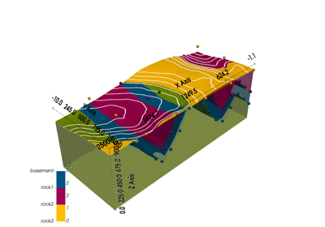

gempy.compute_model¶
- gempy.compute_model(gempy_model: GeoModel, engine_config: GemPyEngineConfig | None = None) Solutions[source]¶
Compute the geological model given the provided GemPy model.
- Parameters:
gempy_model (GeoModel) – The GemPy model to compute.
engine_config (Optional[GemPyEngineConfig]) – Configuration for the computational engine. Defaults to None, in which case a default configuration will be used.
- Raises:
ValueError – If the provided backend in the engine_config is not supported.
- Returns:
The computed geological model.
- Return type:
Examples using gempy.compute_model¶

Video Tutorial “code-along”: Modeling step by step
Video Tutorial "code-along": Modeling step by step